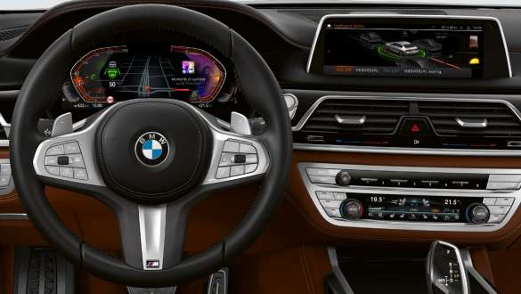
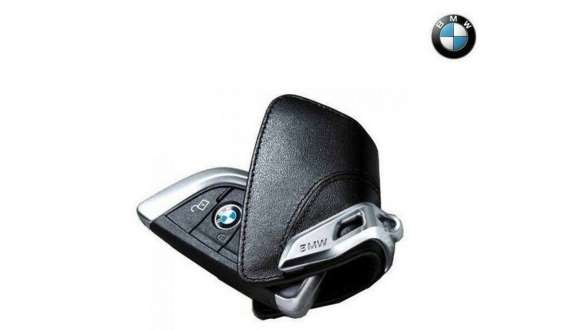

Инновационная концепция BMW 7.0
делает взаимодействие с функциями
автомобиля более простым и интуитивно
понятным, а управлять ими можно при
помощи жестов, голоса, сенсорной
панели и контроллера iDrive. Именно для
этого функциональность контроллера
была усовершенствована. Например,
теперь всеми цифровыми сервисами, в
том числе и приложениями, можно
управлять напрямую.

Ассистент вождения
Professional
Ассистент вождения Professional
предлагает оптимальный комфорт и
максимум безопасности в опасных
ситуациях или в условиях монотонного
движения благодаря подруливающему
ассистенту и системе контроля полосы,
системе предупреждения о сходе с
полосы с активной защитой от боковых
столкновений и другим функциям
обеспечения безопасности
Ассистент парковки Plus
Ассистент парковки Plus упрощает
маневрирование автомобиля при
парковке. В него, помимо прочего, входит
система кругового обзора, включая вид
сверху и панорамный вид, а также
боковая система помощи при парковке,
активная сигнализация аварийного
сближения, функция экстренного
торможения, ассистент парковки с
направляющими линиями и ассистент
движения задним ходом.
Remote Software Upgrade
Хотите, чтобы системы вашего BMW
получали актуальные обновления
программного обеспечения? С функцией
Remote Software Upgrade ваш BMW
всегда будет как новый. Удобный,
надежный и простой способ: и вам не
придется заезжать в сервисный центр.
Обновления передаются через
беспроводное соединение по аналогии с
обновлением ПО
BMW Live Cockpit
Professional
BMW Live Cockpit Professional с функцией
навигации включает в себя
объединенные в сеть сенсорный
информационный дисплей с диагональю
10,25" и полностью цифровую приборную
панель с диагональю 12,3".
ОРИГИНАЛЬНЫЕ АККСЕССУАРЫ ДЛЯ НОВОГО BMW M760Li xDrive
20" Double Spoke 648M.
20" Double Spoke 648M.
Цвет: Серый полированный
Серия авто: G11, G12, G32, G11N, G12N,
G32N
Размер шины: 275/35 R20 102V XL
Размер диска: 10Jх20 ЕT: 41
Арт. : 36112444939, 36112444940.
Прочные резиновые коврики с точно
выдержанными размерами, высоким
бортом и элегантным дизайном
защищают пространство для ног
в передней части салона от воды и грязи.
Выполнены в черном цвете
с высококачественной хромированной
вставкой в форме цифры 7.
Арт.: 51472443985, 51472444039.
Неподвижные крышки колесных ступиц
выполнены в виде эмблемы BMW
и не вращаются вместе с колесом,
а остаются стоять в горизонтальном
положении. Крышки устанавливаются
на все легкосплавные диски BMW
с диаметром крепежного отверстия
112 мм.
Плечики для одежды BMW
для системы Travel &
Comfort.
Плечики BMW позволяют повесить
одежду на тыльной стороне спинок
сидений. Они просто и безопасно
защелкиваются в предлагающийся
отдельно базовый кронштейн или
опциональную систему Travel & Comfort.
Благодаря выдвижному крючку плечики
также могут использоваться вне
автомобиля.
Комплект колпачков для
колесных вентилей BMW.
Высококачественные алюминиевые
колпачки вентилей BMW эффективно
защищают от влаги и грязи
расположенные в алюминиевых
вентилях датчики RDC (системы
контроля давления воздуха в шинах).
Одновременно они делают внешний вид
колес более красивым. С логотипом BMW.

Чехол BMW для ключа.
Ключница из высококачественной кожи
прочно крепится к ключу стильной
металлической застежкой. Защищает
ключ от царапин, загрязнения и брызг
воды, предотвращает непреднамеренное
нажатие кнопок и благодаря своему
черному исполнению идеально
сочетается с салоном BMW.
Слайды M Performance дополняют имеющиеся светодиодные
дверные проекторы BMW четырьмя сменными графическими
изображениями. При открывании дверей выбранный рисунок
автоматически проецируется на землю. Тем самым дверные
проекторы уже в сумерках позволяют создать совершенно
индивидуальную атмосферу при посадке в автомобиль и выходе
из него.